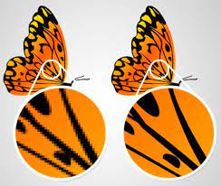

Een afbeelding die is opgebouwd uit afzonderlijke pixels. Een voorbeeld van een bitmapafbeelding is een digitale foto. U kunt bitmapafbeeldingen bewerken in een bitmapprogramma zoals Windows Paint, of het meer professionele Photoshop. In tegenstelling tot vectorafbeeldingen kunt u bitmapafbeeldingen niet zonder kwaliteitsverlies vergroten. Dit komt doordat bij het vergroten de pixels digitaal aangevuld worden, waardoor al snel een vertekend effect ontstaat en het geheel er rafelig uitziet.
Afbeelding die uit lijnen is opgebouwd. Door deze manier van vormen definiëren kan de afbeelding op elke grootte er goed uitzien, omdat bij elke keer bekijken de vorm opnieuw berekend wordt. Dit in tegenstelling tot bitmapafbeeldingen, waarbij de afbeelding uit beeldpunten is uitgebouwd. Een sterke vergroting leidt daarbij tot een erg blokkig beeld.
Nog een uitleg filmpje om het duidelijker te maken. Uitleg filmpje
